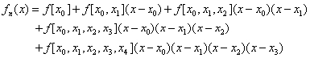
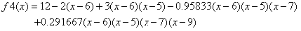

5.4.5. Örnek 2'nin Çözümü
n=4 için Newton interpolasyon polinomu şu şekilde olacaktır:

Bu polinomun katsayılarını oluşturan bölünmüş farklar aşağıda gösterildiği biçimde hesaplanır:

Newton bölünmüş farkları bir tablo biçiminde ifade ediyoruz.
Bu sonuçlara göre dördüncü dereceden Newton interpolasyon polinomu şu şekilde düzenlenir:

Bu polinomda x=8 yazılacak olursa,

elde edilir.